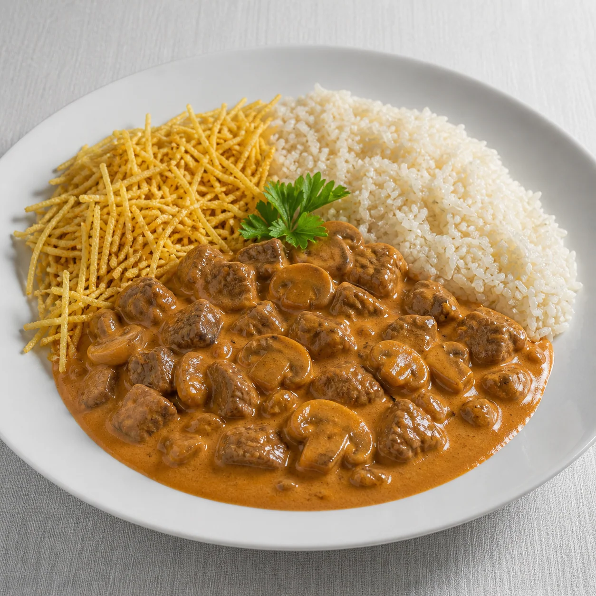

Strogonoff

Descrição
Um prato clássico e cremoso de frango, perfeito para companhar arroz branco e batata palha.
INGREDIENTES
- 1 colher (sopa) de manteiga
- 500g de peito de frango em cubos
- 1 cebola picada
- 2 dentes de alhos picados
- 200g de champignon fatiado
- 3 colheres (sopa) de ketchup
- 1 colher (sopa) de mostarda
- 1/2 xícara (chá) de creme de leite
- 1/4 xícara (chá) de molho de tomate
- Sal e pimenta a gosto
PASSOS
- Tempere o frango com sal e pimenta e doure na manteiga.
- Adicione a cebola, o alho e o champignon e refogue bem.
- Misture o molho de tomate, o ketchup e a mostarda, depois incorpore o creme de leite no fogo baixo.
Home